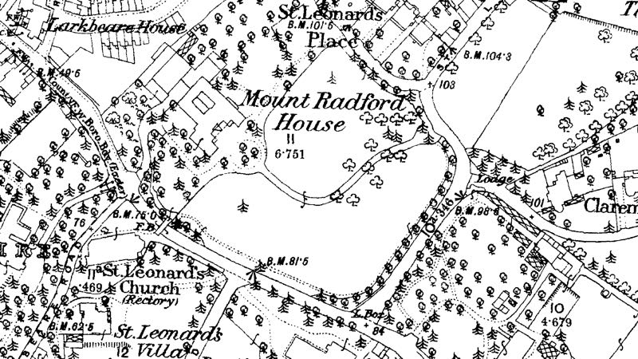
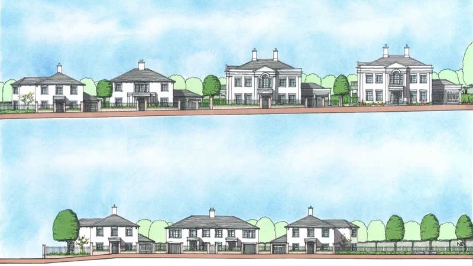
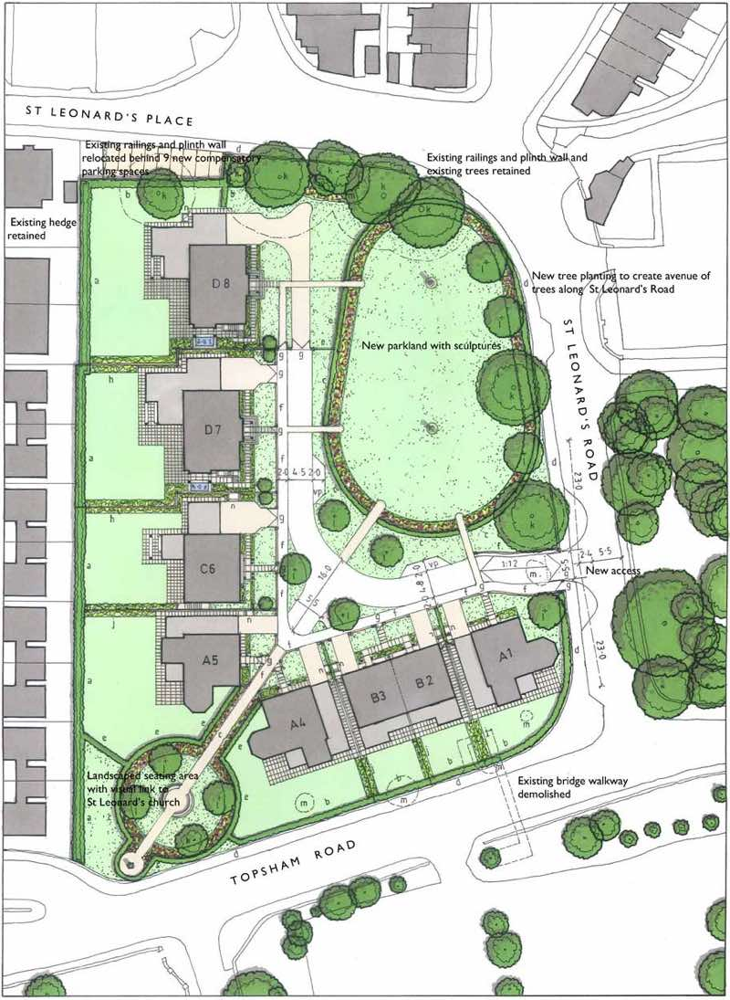
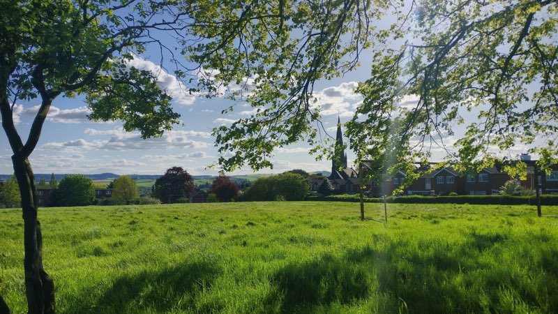

Few passing Mount Radford Lawn, near County Hall on Topsham Road, realise that what looks like an ordinary school playing field has been maintained as recreational green space for at least the past 450 years.
The occupants of an historic house built during the reign of Elizabeth I first looked out over the lawn c.1570. The house was later rebuilt in the Georgian era, when a cedar-lined carriage drive was added along what is now St Leonard’s Road to lead visitors arriving at the house across the lawn in a graceful curve.
In 1826 the house was sold and became a school, before it was demolished in 1902, when its site was redeveloped as Barnardo Road and the lawn was sold to what is now known as the Exeter Royal Academy for Deaf Education (ERADE), which had been headquartered on the other side of Topsham Road since 1828.
A century passed until, in June 2018, Exeter City Council granted planning permission for the redevelopment of ERADE’s main site, allowing the charity to enact its plan to relocate to purpose-built facilities on the former Rolle College campus in Exmouth.
Acorn Property Group are now set to build 146 new homes, a care home and assisted living units there, as well as accommodation for a pre-school playgroup already housed on the site. ERADE intend to decamp in 2020, after almost 200 years in Exeter.
 Mount Radford Lawn in the late 19th Century. Copyright © and/or Database Right Landmark Information Group and Ordnance Survey Crown Copyright and/or Database Right 2017.
Last month, ERADE revealed its intention to sell Mount Radford Lawn for development as luxury housing by Burrington Estates, who had acquired an option to buy the land subject to successful planning application.
Burrington Estates then held a consultation event on 7 May at their offices at Dean Clarke House on Southernhay at which they presented their scheme.
Paul Scantlebury, Director of Burrington Estates, said his firm was working in partnership with ERADE to deliver eight new family homes while making part of the site available as a “public open space”.
When asked about the many planning hurdles the project appeared to face, he said his firm’s advisors were confident that all relevant issues had been addressed and that the project would proceed.
Mr Scantlebury added that ERADE had chosen the scheme among several tenders because of their view that the low density, high quality design and open space allocation would be most likely to gain planning approval.
The project plans show around 64% of the site allocated to private housing and 36% to “new parkland with sculptures”. He also said this allocation would generate a combined Section 106 and Community Infrastructure Levy (CIL) contribution of around £700,000.
 Front elevations of proposed development at Mount Radford Lawn. Image Burrington Estates.
Exeter City Council’s current published policy is to “consult local communities on how to spend at least 15% of the CIL receipts collected in their area”, which would equate to approximately £100,000 in this case, while also allocating 72% to major infrastructure projects, including St Sidwell’s Point.
However, the city has recently conducted an audit of its community grants scheme, which determines how local CIL receipts spending is decided, but has so far refused to reveal its conclusions.
It is also not yet clear how the open space proposed in the current plans would be managed, nor who would control access. If the city council were invited to adopt this part of the site as a public park, its acceptance would imply responsibility for maintenance costs.
If a management company owned and run by subsequent site residents were to take responsibility for the green space, public access rights might not apply.
At the consultation event Mr Scantlebury also said that the size of this open space could be increased during the planning process, with the result that fewer houses would be built, and that ERADE would receive a smaller payment for the site in turn.
This would also reduce the CIL contribution, as it is levied according to the amount of new floor space created. As the proposals are for fewer than ten homes, the developers would not be required to provide any affordable housing.
 Plan of proposed development at Mount Radford Lawn. Image Burrington Estates.
St Leonard’s Neighbourhood Association has an entirely different vision for the site. Nigel Fitzhugh, the association’s chair, has put forward a proposal to instead create a community playing field, including sports pitches and running tracks for use by schools and sports clubs, as part of a public park which would also house a community building similar to the newly-built facility at Belmont Park.
He said St Leonard’s Neighbourhood Association “has been seeking to build or acquire community premises for 45 years”, pointing at successful community-owned business models funded by grants and donations elsewhere in the country.
He cited Exeter City Council’s policies around neighbourhood place-making and promoting active and healthy lifestyles to support wellbeing and reduce social isolation, and also said Mount Radford Lawn had, until recently, been used by local schools for sports activities for many years.
Isca School of English confirmed it had “used Mount Radford Lawn for the last 22 years for ten weeks each summer, two evenings a week, for football, volleyball and rounders”.
The Maynard School said it had “used the field for lots of summer sporting activities for girls which are important for their health and wellbeing. We do rounders for all ages, juniors athletics, tag rugby, fun football and quick cricket”, and added that it had also used it “for junior sports day and key stage one skills-based activities.”
A parent at the school said: “The children used to walk to games, but now have to be bussed to Exeter Arena instead.”
St Leonard’s Pre-School, which is also affected by the changes, said: “We were able to use the area for exercise and play with the children, which was particularly enchanting, watching the children running freely in such a safe, open green space and playing hide and seek amongst the beautiful trees.”
The playgroup has been forced to relocate temporarily to Palace Gate, pending redevelopment of ERADE’s main site, after which it will return to new buildings there.
The pre-school said: “Hopefully we will be situated almost directly opposite Mount Radford Lawn. Many of the children who attend pre-school, although lucky in some ways, live in houses and flats with either very small gardens or no gardens at all.
“How wonderful it would be if, by then, Mount Radford Lawn was available for the local community to use and we could take the children to play there again.”
Mount Radford Lawn looking towards St Leonard’s school
The community has the support of Jemima Moore, the newly-elected independent councillor for Newtown & St Leonard’s, who emerged as a candidate after campaigning to prevent the sale of another of the ward’s green spaces for development at Clifton Hill sports centre.
She said: “I would like to see St. Leonard’s Neighbourhood Association’s vision, which sees the lawn used as a community-friendly space, championed by Exeter City Council. The lawn is hundreds of years old and is in a conservation area.
“It has been used by schools for sports and is an important green space in our city. We need to ensure that Sports England is consulted and that it is given proper protection from being developed.”
“At the moment St. Leonard’s doesn’t have a community building. Mount Radford Lawn has the potential to become a valuable community space. Residents have let me know that having a place where they can come together for sport, play and to get to know their neighbours is something which would improve their community.”
Matt Vizard, a Labour councillor in the ward, also backs the community. He said: “I’m very supportive of the neighbourhood association’s vision for the site. It’s in keeping with what most residents have been saying and are keen to have there. I’m very supportive of residents’ objections to the Burrington proposals.”
He added: “The space has been an amenity for the local public for as long as I can remember. Historically there has been resistance to any housing development on that site, and it’s in a conservation area.”
 Mount Radford Lawn looking towards St Leonard’s church spire
Mr Fitzhugh identified several challenges for the housing proposals. He said Mount Radford Lawn was neither scheduled for development in the local plan, nor the recently-launched Liveable Exeter housing delivery programme, and that other city council policies related to playing fields and physical activity would support objections to development.
He said that Sports England must be consulted over applications to develop playing fields, and has policies which value access to high quality open spaces and opportunities for sport and physical activity.
He also said the National Planning Policy Framework (NPPF) states that playing fields should not be built on unless assessment shows they are surplus to requirements.
However, these challenges may turn out to be less robust than first appears, partly because Exeter’s existing local plan is weakened by failing to demonstrate a five-year land supply, partly because Sports England treats school and public playing fields differently (and Mount Radford Lawn is currently neither) and partly because claims that playing fields are not surplus to requirements can be contested.
St Leonard’s Neighbourhood Association is nevertheless determined to demonstrate community support for their vision for the site. An online survey that has received an astonishing 300 responses in its first week shows 95.5% support the association’s vision, with only three respondents so far saying they back Burrington Estates’ proposals.
And local residents are coming forward saying they would be willing to make significant philanthropic donations to prevent the site being built on.
With well-informed arguments centred on NPPF principles concerning effective use of land and appropriate densities, the community’s objections may yet prevail, at least at first hearing.
And there are certainly elements of the current development proposals that are insensitive to the local context, no matter how much “the style of the houses will look to complement and enhance the surrounding area”, as the Burrington Estates literature says.
Members of the public at the consultation event pointed to the creation of car parking on green space, the positioning of a vehicle entrance opposite school gates which are already very congested at peak times and the erasure of local history implicit in the plan to rename the site as “St Leonard’s Park”.
Signs announcing the development that were prematurely erected around the site, covered in graffiti then hastily removed suggest that tensions may develop as the planning process unfolds.
Exeter Royal Academy for Deaf Education entrance on Topsham Road
However the principal cause of potential conflict at Mount Radford Lawn is prospective profit driven by planning gain, which may yet prevent anyone involved getting what they want.
Planning gain is the increase in value of land which results from planning permission being granted for that land. In this case, the site owner, ERADE, would like to get the best possible price for its land. Its trustees rightly say this is their fiduciary duty.
The developers, Burrington Estates, would like to build luxury houses with handsome profit margins, which would also allow them to pay the site owner a high price for the land.
They are both banking on the city council granting permission for their proposals and, as proponents of this model would say, “unlocking” the value of the site.
Their problem is that the city council’s role is to represent the interests of the local community, which would instead prefer to open up and share the land, and a community building it would like to develop, as resources for all.
In this case it looks likely that the St Leonards community could raise the funds necessary to achieve its vision, provided the price of the land doesn’t soar as a result of the council approving the developer’s proposals.
The situation is made more acute by the fact that the main beneficiary of planning gain would be the site owner, an organisation that is soon to leave the city, and by its statement that it will simply withdraw the land from sale if planning consent cannot be obtained and wait until circumstances are more favourable towards its development.
This would leave it enclosed and inaccessible until the maximum possible profit might be realised from its eventual sale. ERADE has form on this: it tried and failed to develop the same site a decade ago, and has been sitting on it since.
St Leonard’s Neighbourhood Association has been advised by a local surveyor that Mount Radford Lawn is worth around £150,000 without planning permission, but that it is likely ERADE has been offered more than £1.5 million, possibly as much as £2 million, for the site with planning consent.
With this sort of money at stake, it is unlikely these proposals will fall at the first hurdle. The question is how the city council’s planning team will deal with them later, at appeal.
Jemima Moore said: “If permission to build houses on Mount Radford Lawn is granted, a historic green space will go from being a resource the community could potentially afford to own and share, through fundraising and donations, to a private asset that is permanently beyond the community’s reach.
“It is clear that the best use of the site would be as a community resource, providing sports facilities for schools and clubs, a place for community groups to meet, and a green space managed to maximise biodiversity in the area.”
“The Deaf Academy are hoping that the city council will grant planning permission for luxury houses at Mount Radford Lawn, greatly increasing its value to them and their developers.
“But the potential for community benefit at Mount Radford Lawn is priceless.”